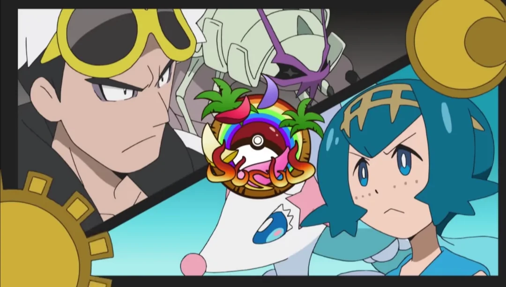
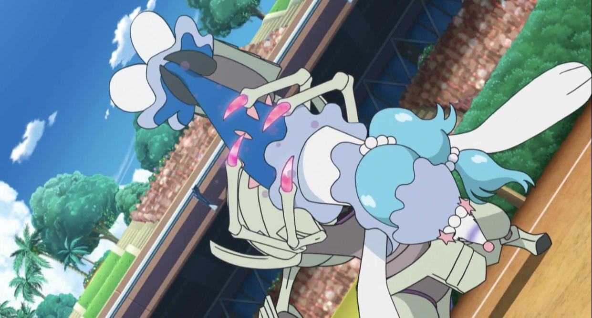
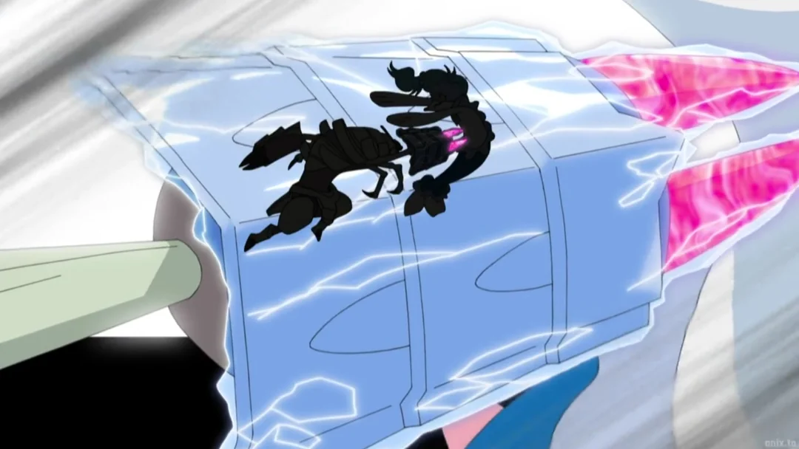
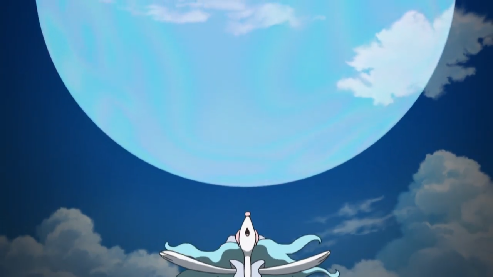

Lana poderia ter ganhado se conseguisse diminuir a resistência de Golisopod logo no começo com o Z Movie, já que o foco de Guzma era revidar e não se defender.
Na Liga Pokémon de Alola, nas quartas de final, a batalha entre Lana e sua Primarina contra Guzma e seu Golisopod destacou-se pela extrema brutalidade do líder da Equipe Skull. Guzma anulou rapidamente a estratégia de Lana ao usar o golpe Throat Chop para impedir os ataques baseados em som de Primarina, emendando investidas implacáveis com Poison Jab.
Lana poderia ter ganhado se conseguisse diminuir a resistência de Golisopod logo no começo com o Z Movie, já que o foco de Guzma era revidar e não se defender.

Mesmo encurralada, Lana tentou reagir e utilizou seu movimento Z, Oceanic Operetta. No entanto, o Golisopod de Guzma cortou o ataque ao meio com um golpe preciso de Liquidation, garantindo a vitória avassaladora de Guzma e marcando uma das derrotas mais duras e intensas de todo o anime.


